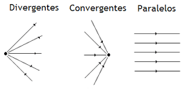

Sumário
Conceitos de Óptica Geométrica
Quando nos direcionamos à óptica, lembramos de diversos conceitos relacionados a olho, visão, lentes, espelhos, luz, ondas eletromagnéticas, prisma, lâmpadas, estrelas, cor, laser, raio, etc.
Para iniciar, vamos relembrar então alguns conceitos de ondas eletromagnéticas:
- As ondas eletromagnéticas podem se propagar na velocidade da luz 3 x 10^{8} m/s.
- A luz nada mais é do que uma onda eletromagnética.
Mas afinal, o que é luz?
A luz é um agente físico responsável pelo estímulo visual. Só enxergamos um objeto
quando sua luz atinge os nossos olhos ao estimular a retina. Por fim, a óptica geométrica
estuda o comportamento da propagação da luz nos diversos meios, representando através de
segmentos de reta orientados denominados raios de luz, que podem ser divergentes,
convergentes ou paralelos.

Comportamento dos raios de luz - Link da imagem
Além desta classificação, as fontes de luz ainda podem ser primárias, secundárias, extensas ou pontuais.
- Fontes Primárias: produzem a luz que emitem, como uma lanterna ou uma lâmpada, por exemplo.
- Fontes Secundárias: refletem uma luz já produzida, como a Lua, uma caneta, uma árvore, por exemplo
- Fontes Extensas: em vários pontos desta fonte é emitida a luz. O principal exemplo de uma fonte extensa é o Sol visto da Terra.
- Fontes Pontuais: Sabendo que a luz são ondas eletromagnéticas, é importante saber que a sua velocidade é de 3 x 10^{8} m/s no vácuo. Nos meios materiais, ela será sempre inferior e dependerá da frequência da cor.
RESUMÃO
Chegou a hora de fazer o Resumão! Para isso, aqui vão algumas dicas para você fazer o seu de forma completa e saber tudo sobre os conceitos da óptica geométrica:
- Já parou para pensar por que, em uma tempestade, visualizamos o raio primeiro e depois escutamos o barulho do trovão? Isto acontece justamente pela diferenças entre suas velocidades! Enquanto a da luz é de 300 000 000 m/s, a do som é de apenas 340 m/s.
- Você precisará lembrar de características e comportamentos dos feixes de luz, para isso adote pequenos resumos ou truques para lembrar.
Refêrencias
PIETROCOLA, Maurício; POGIBIN, Alexander; ANDRADE, Renata; ROMERO, Talita Raquel. Física: Em Contextos. 1. ed. São Paulo: Editora do Brasil, 2016. 288 p.